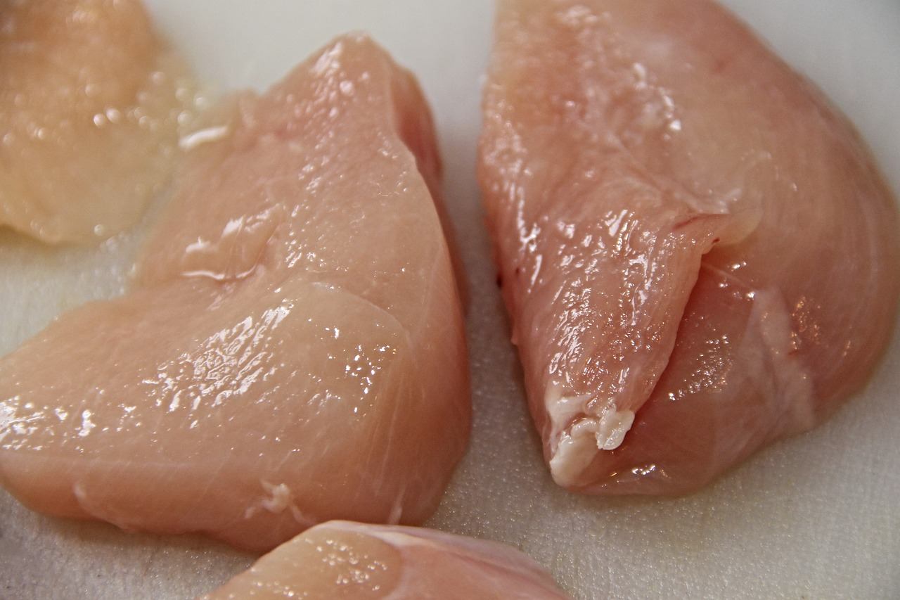

Calories in Meat > Skinless chicken breast calories
Skinless chicken breast calories
Each American eats approximately 50 kilograms of chicken every year. Aside from being very affordable, chicken is also protein-dense and low-fat. Compared to other types of meat, it has the same protein content but much lower fat content. Chicken is a decent source of vitamins and minerals including potassium, phosphorus, and B vitamins. Moreover, collagen and gelatin can easily be extracted from the bones.
Chicken breast is high in protein and low in fat, making it an excellent choice for people trying to lose weight.
One skinless, boneless, cooked chicken breast (100 grams) has the following nutrition breakdown:
- Calories: 165kcal
- Protein: 31 grams
- Carbs: 0 grams
- Fat: 3,6 grams
Skinless chicken breast calories are described in detail on the Calorie-Charts.info.
There are also: